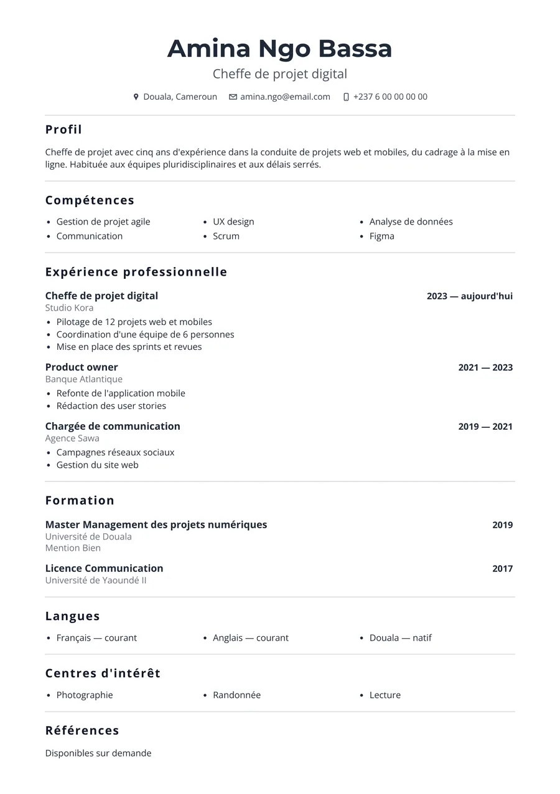

FAFIO, a document studio in your pocket
An Android and web app that turns a few filled-in fields into print-ready documents: CVs, reports, theses, letters and presentations.
- 18
- document types, from CVs to theses
- 4
- formats: PDF, Word, PowerPoint, image
- 3
- languages, including right-to-left Arabic
- 100%
- designed and built by axOlut
Where it started
In Cameroon, many students pay an internet café to format an internship report or a thesis, and lose hours on cover pages, tables of contents or equations that won’t stay in place. Existing tools are designed for other standards and other habits.
Our answer
An app where you simply fill in guided fields. FAFIO handles everything else: Cameroonian-standard cover pages, numbered headings, table of contents, equations, tables, charts, themes and fonts. The result exports to PDF, editable Word or PowerPoint.
An interface built for the phone
Simple screens, settings within thumb’s reach and a faithful preview of the document before export.


What we built
An in-house document engine
Word, PowerPoint and PDF files are generated right on the phone, with no server, and render the same on Android and the web.
Formulas and charts
LaTeX equations rendered as native Word equations, charts generated from the data you enter.
Themes, colours and text size
Illustrated templates, a colour palette and a size control that apply to the whole document.
Four CV templates
Header band, centred classic, dark and light sidebars, with an optional photo.
AI writing assistant
Writing help built into the fields, with running costs kept under control.
Installable everywhere
A native Android app plus a web version installable on iPhone, Android, Windows and Mac.
Documents people want to read
Four CV templates generated by FAFIO, shown here with a fictional profile.




Under the hood
A native Android app in Kotlin and Jetpack Compose, a document engine shared between Android and the web, a progressive web app for iPhone and desktop, and automated builds for every release.
Have a project in mind?
Tell us about your idea: you get a first reply quickly, and a clear quote before committing to anything.